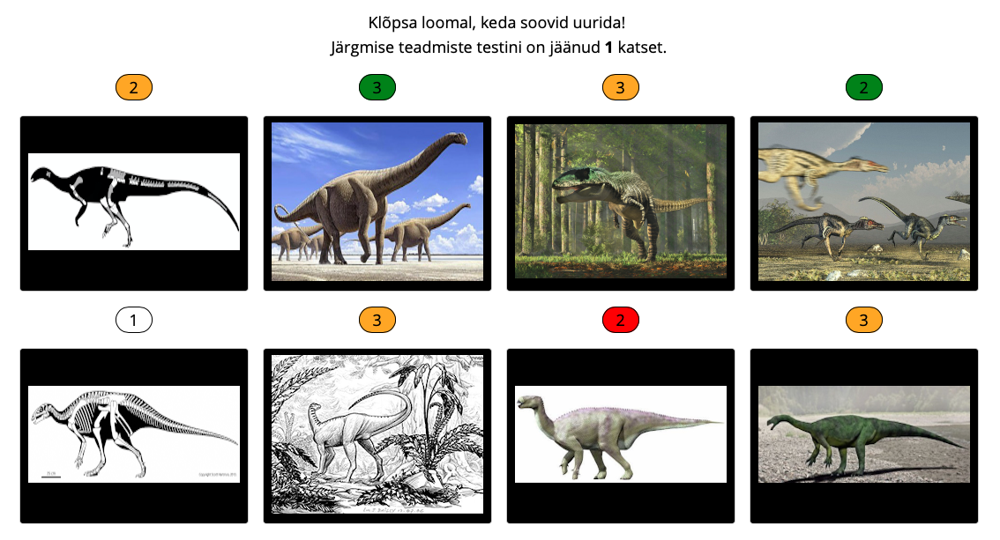
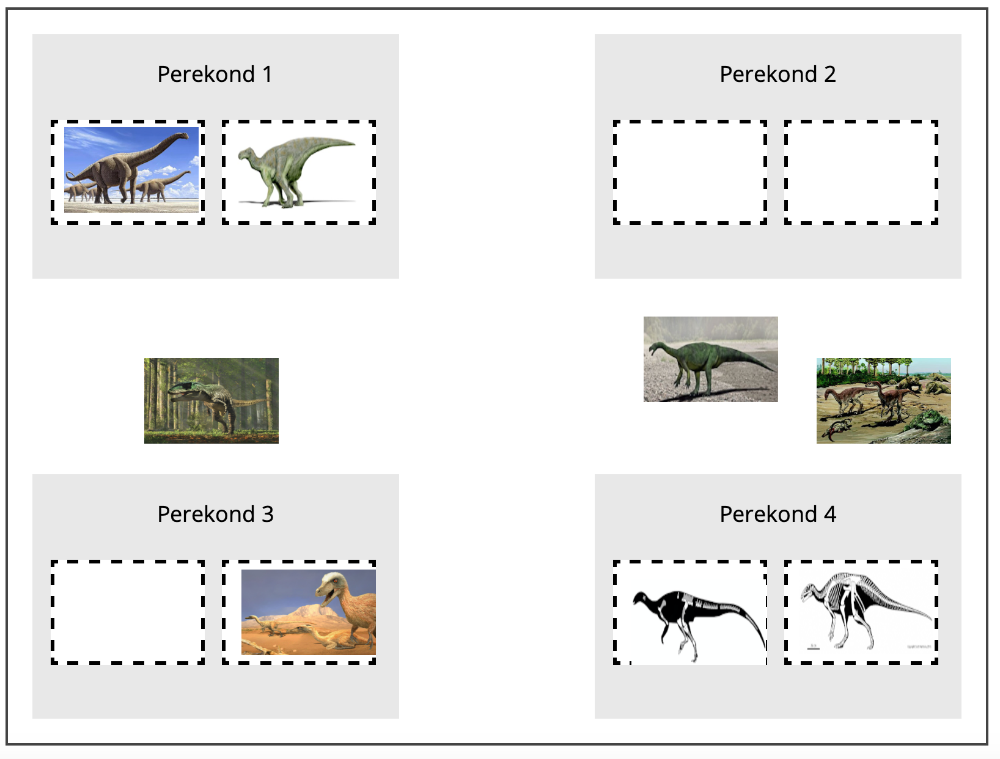

<!DOCTYPE html>
<html>
  <head>
    <script src="jspsych-6-dinoNimi2/jspsych.js"></script>
    <script src="jspsych-6-dinoNimi2/plugins/jspsych-selectExemplar.js"></script>
    <script src="jspsych-6-dinoNimi2/plugins/jspsych-labelExemplar.js"></script>
    <script src="jspsych-6-dinoNimi2/plugins/jspsych-judgmentTest.js"></script>
    <script src="jspsych-6-dinoNimi2/plugins/jspsych-instructions.js"></script>
    <script src="jspsych-6-dinoNimi2/plugins/jspsych-free-sort.js"></script>
    <script src="jspsych-6-dinoNimi2/plugins/jspsych-html-button-response.js"></script>
    <script src="jspsych-6-dinoNimi2/plugins/jspsych-survey-text-pcode.js"></script>
    
    <script src="jspsych-6-dinoNimi2/plugins/jspsych-graphs.js"></script>
    <script src='https://cdn.plot.ly/plotly-latest.min.js'></script>

    <link rel="stylesheet" href="jspsych-6-dinoNimi2/css/jspsych.css"></link>
    <meta http-equiv="content-type" content="text/html; charset=utf-8">
  </head>

  <script>

    
    n_trials_sdl = 10;
    n_trials_freeSort = 4;
    n_blocks_judgment = 2;

    n_sdl = 7;
    n_freeSort_phases=4;
    n_judgment_phases=4;
    n_tests=n_freeSort_phases+n_judgment_phases

    count_test = 0;
    count_freeSort = 0;
    count_judgment = 0;
    count_sdl = 0; // "Click Next to start the "+(count_sdl+1)+". learning phase."

    // Helper functions and objects to store data
    function scrollWin() {window.scrollTo(0, 0);};

    function randomInteger(min, max) {return Math.floor(Math.random() * (max - min) + min);};
    function makeSeq(seqLength) {
      sequence = [];
      for (i = 0; i < seqLength; i++) {sequence.push(i);}
      return sequence
    };

    var tax_bottomUp = {
        Charachodontosaurus:"Theropoda",
        Velociraptor:"Theropoda",
        Argentinosaurus:"Sauropodomorpha",
        Saturnalia:"Sauropodomorpha",
        Macrogryphosaurus:"Elasmaria",
        Isasicursor:"Elasmaria",
        Barilium:"Styracosterna",
        Uteodon:"Styracosterna"
    }

    var properties_of_species = {
        Charachodontosaurus:["Suur","Sisalvaagnaline","Kahejalgne"],
        Velociraptor:["V&#228ike","Sisalvaagnaline","Kahejalgne"],
        Argentinosaurus:["Suur","Sisalvaagnaline","Neljajalgne"],
        Saturnalia:["V&#228ike","Sisalvaagnaline","Neljajalgne"],
        Macrogryphosaurus:["Suur (v&#245rreldes perekonna liikmetega)","Lindvaagnaline","Kahejalgne"],
        Isasicursor:["V&#228ike","Lindvaagnaline","Kahejalgne"],
        Barilium:["Suur","Lindvaagnaline","Neljajalgne"],
        Uteodon:["V&#228ike","Lindvaagnaline","Neljajalgne"]
    };
    var properties_illustrated = {
        Charachodontosaurus:["dino_pics/size_carcharodontosaurus.png","dino_pics/reptileHip.png","K&#245nnib kahel jalal"],
        Velociraptor:["dino_pics/size_velociraptor.png","dino_pics/reptileHip.png","K&#245nnib kahel jalal"],
        Argentinosaurus:["dino_pics/size_argentinosaurus.png","dino_pics/reptileHip.png","K&#245nnib neljal jalal"],
        Saturnalia:["dino_pics/size_saturnalia.png","dino_pics/reptileHip.png","K&#245nnib neljal jalal"],
        Macrogryphosaurus:["dino_pics/size_macrogryphosaurus.png","dino_pics/birdHip.png","K&#245nnib kahel jalal"],
        Isasicursor:["dino_pics/size_isasicursor.png","dino_pics/birdHip.png","K&#245nnib kahel jalal"],
        Barilium:["dino_pics/size_barilium.png","dino_pics/birdHip.png","K&#245nnib neljal jalal"],
        Uteodon:["dino_pics/size_uteodon.png","dino_pics/birdHip.png","K&#245nnib neljal jalal"]
    };

    var Theropoda = {
        Charachodontosaurus:["dino_pics/Charachodontosaurus1.png","dino_pics/Charachodontosaurus2.png"],
        Velociraptor:["dino_pics/Velociraptor1.png","dino_pics/Velociraptor2.png"]
    };
    var Sauropodomorpha = {
        Argentinosaurus:["dino_pics/Argentinosaurus1.png","dino_pics/Argentinosaurus2.png"],
        Saturnalia:["dino_pics/Saturnalia1.png","dino_pics/Saturnalia2.png"]
    };
    var Elasmaria = {
        Macrogryphosaurus:["dino_pics/Macrogryphosaurus1.png","dino_pics/Macrogryphosaurus2.png"],
        Isasicursor:["dino_pics/Isasicursor1.png","dino_pics/Isasicursor2.png"]
    };
    var Styracosterna = {
        Barilium:["dino_pics/Barilium1.png","dino_pics/Barilium2.png"],
        Uteodon:["dino_pics/Uteodon1.png","dino_pics/Uteodon2.png"]
    };
    
    var dino_pics = {
        Theropoda,
        Sauropodomorpha,
        Elasmaria,
        Styracosterna
      };
    
    n_families = Object.keys(dino_pics).length;
    n_subFamilies = Object.keys(Theropoda).length;
    n_species = Theropoda.Charachodontosaurus.length;
    number_btn = n_families*n_subFamilies;

    var TorF_forEachSpecies = {
        Charachodontosaurus:[],
        Velociraptor: [],
        Argentinosaurus:[],
        Saturnalia:[],
        Macrogryphosaurus:[],
        Isasicursor:[],
        Barilium:[],
        Uteodon:[]
    }; 

    var click_history_subFam = {
        Charachodontosaurus:[],
        Velociraptor:[],
        Argentinosaurus:[],
        Saturnalia:[],
        Macrogryphosaurus:[],
        Isasicursor:[],
        Barilium:[],
        Uteodon:[]
      };

    var h_m_c_f_perJudgePhase = {
        // hit, miss, cr, fa
        Charachodontosaurus:[],
        Velociraptor:[],
        Argentinosaurus:[],
        Saturnalia:[],
        Macrogryphosaurus:[],
        Isasicursor:[],
        Barilium:[],
        Uteodon:[]
    };
    for(species_x=0;species_x<Object.keys(h_m_c_f_perJudgePhase).length;species_x++){
        species_x_key = h_m_c_f_perJudgePhase[Object.keys(h_m_c_f_perJudgePhase)[species_x]]
        for(i=0;i<n_judgment_phases;i++){species_x_key.push([0,0,0,0])}
    }

    var nCorrect_freeSort = {
        Theropoda:[0,0,0,0],
        Sauropodomorpha:[0,0,0,0],
        Elasmaria:[0,0,0,0],
        Styracosterna:[0,0,0,0]
    };

    function reshuffle_sdl(){ 
      // In every trial, sample one exemplar from each category and reshuffle the sequence of categories
      var SeqMono_families = [];
      var Seq0 = makeSeq(n_families);
      for(i=0;i<n_families;i++){
         for(j=0;j<n_subFamilies;j++){
             SeqMono_families.push(Seq0[i])
          }
      };

      var SubFam_indices = [];
      for(x=0;x<n_families;x++){
        var Seq0 = makeSeq(n_subFamilies);
        var Seq1 = [];
        for(y=0;y<n_subFamilies;y++){
            y_sample = randomInteger(0,Seq0.length);
              Seq1.push(Seq0[y_sample]);
              Seq0.splice(y_sample,1);
        };
        SubFam_indices.push(Seq1);
      }
      
      SeqRand_families = [];
      for(i = 0; i<number_btn; i++){
            i_sample = randomInteger(0,SeqMono_families.length);
            SeqRand_families.push(SeqMono_families[i_sample]);
            SeqMono_families.splice(i_sample,1);
      };
      dino_pics_reshuffled_sdl = [];
      current_species_sequence_sdl = [];
      for (i = 0; i < SeqRand_families.length; i++) {
            i_familyName = Object.keys(dino_pics)[SeqRand_families[i]];
            i_subFamilies = dino_pics[i_familyName];
            i_subFamily_sampled_ID = SubFam_indices[SeqRand_families[i]][0];
            i_subFamily_sampled_name = Object.keys(i_subFamilies)[i_subFamily_sampled_ID];
            current_species_sequence_sdl.push(i_subFamily_sampled_name);
            SubFam_indices[SeqRand_families[i]].splice(0,1);
            i_species  = i_subFamilies[i_subFamily_sampled_name][randomInteger(0, n_subFamilies)];
            dino_pics_reshuffled_sdl.push(i_species);
      };
    
      // In every trial, reshuffle the sequence of label buttons
      var dino_labels = Object.keys(dino_pics);
      var number_btn_labels = dino_labels.length;
      
      var SeqMono_labels = makeSeq(dino_labels.length);
      SeqRand_labels = [];
      for(i = 0; i<number_btn_labels; i++){
        i_sample = randomInteger(0,SeqMono_labels.length);
        SeqRand_labels.push(SeqMono_labels[i_sample]);
        SeqMono_labels.splice(i_sample,1)
      }
      dino_labels_reshuffled_sdl = [];
      for (i = 0; i < number_btn_labels; i++) {
        dino_labels_reshuffled_sdl.push(dino_labels[SeqRand_labels[i]]);
      };
    };
    // per species, equal number of correct and incorrect picture-label pairings
    // therefore, n_blocks should be an even number
    function makeTestNames_judgment(){
      var species_indices = [];
      for(fam_x=0; fam_x<n_families; fam_x++){species_indices.push([])};

      for(xf=0;xf<n_families;xf++){
        for(xsf=0;xsf<n_subFamilies;xsf++){
          var Seq0 = makeSeq(n_species);
          var Seq1 = [];
            for(y=0;y<n_species;y++){
                y_sample = randomInteger(0,Seq0.length);
                  Seq1.push(Seq0[y_sample]);
                  Seq0.splice(y_sample,1);
            };
          species_indices[xf].push(Seq1);
        };
      };
      dino_pics_judgment_perBlock = [];
      species_sequence_judgment_perBlock = [];
      names_tobeDisplayed_judgment_perBlock = [];
      true_familyNames_judgment_perBlock = [];
      // make sure that there are 50% true picture-label pairings
      for(fx =0;fx<n_families*n_subFamilies; fx++){
        TorF_0 = [];
        for(tfx=0;tfx<n_blocks_judgment;tfx++){
          if(tfx<(n_blocks_judgment/2)){
            TorF_0.push("T");
          }else{
            TorF_0.push("F");
          }
        };
        for(i=0;i<n_blocks_judgment;i++){
          i_sample = randomInteger(0,TorF_0.length);
          TorF_forEachSpecies[Object.keys(TorF_forEachSpecies)[fx]].push(TorF_0[i_sample]);
          TorF_0.splice(i_sample,1);
        }
      };
      for(block_x=0;block_x<n_blocks_judgment;block_x++){
        var SeqMono_families = [];
        var Seq0 = makeSeq(n_families);
        for(i=0;i<n_families;i++){
          for(j=0;j<n_subFamilies;j++){
             SeqMono_families.push(Seq0[i])
          }
        };
        var SubFam_indices = [];
        for(x=0;x<n_families;x++){
          var Seq0 = makeSeq(n_subFamilies);
          var Seq1 = [];
          for(y=0;y<n_subFamilies;y++){
              y_sample = randomInteger(0,Seq0.length);
                Seq1.push(Seq0[y_sample]);
                Seq0.splice(y_sample,1);
          };
          SubFam_indices.push(Seq1);
        };
      
        SeqRand_families = [];
        for(i = 0; i<number_btn; i++){
              i_sample = randomInteger(0,SeqMono_families.length);
              SeqRand_families.push(SeqMono_families[i_sample]);
              SeqMono_families.splice(i_sample,1);
        };
        var dino_pics_reshuffled_judgment = [];
        var current_species_sequence_judgment = [];
        for (i = 0; i < SeqRand_families.length; i++) {
              i_family_ID = SeqRand_families[i];
              i_familyName = Object.keys(dino_pics)[i_family_ID];
              i_subFamilies = dino_pics[i_familyName];
              i_subFamily_ID = SubFam_indices[SeqRand_families[i]][0];
              i_subFamily_name = Object.keys(i_subFamilies)[i_subFamily_ID];
              current_species_sequence_judgment.push(i_subFamily_name);
              SubFam_indices[SeqRand_families[i]].splice(0,1);
              i_species_ID = species_indices[i_family_ID][i_subFamily_ID][0]
              species_indices[i_family_ID][i_subFamily_ID].splice(0,1);
              i_species  = i_subFamilies[i_subFamily_name][i_species_ID];
              dino_pics_reshuffled_judgment.push(i_species);
        };
        var true_familyNames_judgment = [];
        for(tx=0;tx<current_species_sequence_judgment.length;tx++){
          true_familyNames_judgment.push(tax_bottomUp[current_species_sequence_judgment[tx]]);
        };
        var names_tobeDisplayed_judgment = [];
        true_or_false_seq = [];
        for(tf=0;tf<true_familyNames_judgment.length;tf++){
            tf_name = current_species_sequence_judgment[tf];
            tf_value = TorF_forEachSpecies[tf_name][block_x];
            if(tf_value=="T"){
            //if(randomInteger(0,2)==0){
              true_or_false_seq.push("true");
              names_tobeDisplayed_judgment.push(true_familyNames_judgment[tf]);
            }else{
              true_or_false_seq.push("false");
              tf_trueName = true_familyNames_judgment[tf];
              setOfFamilyNames = Object.keys(dino_pics);
              trueName_pos = setOfFamilyNames.indexOf(tf_trueName);
              setOfFamilyNames.splice(trueName_pos,1)
              if(tf>0){
                prevName_pos = setOfFamilyNames.indexOf(tf_name_prev);
                setOfFamilyNames.splice(prevName_pos,1)
              }
              tf_falseName = setOfFamilyNames[randomInteger(0, setOfFamilyNames.length)];
              names_tobeDisplayed_judgment.push(tf_falseName);
            }
            tf_name_prev = tf_name
        };
        dino_pics_judgment_perBlock.push(dino_pics_reshuffled_judgment);
        species_sequence_judgment_perBlock.push(current_species_sequence_judgment);
        names_tobeDisplayed_judgment_perBlock.push(names_tobeDisplayed_judgment);
        true_familyNames_judgment_perBlock.push(true_familyNames_judgment);
      };
    };

    function makeTestNames_freeSort(){
      var SeqMono_families = [];
      var Seq0 = makeSeq(n_families);
      for(i=0;i<n_families;i++){
         for(j=0;j<n_subFamilies;j++){
             SeqMono_families.push(Seq0[i])
          }
      };

      var SubFam_indices = [];
      for(x=0;x<n_families;x++){
        var Seq0 = makeSeq(n_subFamilies);
        var Seq1 = [];
        for(y=0;y<n_subFamilies;y++){
            y_sample = randomInteger(0,Seq0.length);
              Seq1.push(Seq0[y_sample]);
              Seq0.splice(y_sample,1);
        };
        SubFam_indices.push(Seq1);
      };
      
      SeqRand_families = [];
      for(i = 0; i<number_btn; i++){
            i_sample = randomInteger(0,SeqMono_families.length);
            SeqRand_families.push(SeqMono_families[i_sample]);
            SeqMono_families.splice(i_sample,1);
      };
      dino_pics_reshuffled_freeSort = [];
      basic_familyName_freeSort = [];
      sub_familyName_freeSort = [];
      for (i = 0; i < SeqRand_families.length; i++) {
            i_familyName = Object.keys(dino_pics)[SeqRand_families[i]];
            basic_familyName_freeSort.push(i_familyName);
            i_subFamilies = dino_pics[i_familyName];
            i_subFamily_sampled_ID = SubFam_indices[SeqRand_families[i]][0];
            i_subFamily_sampled_name = Object.keys(i_subFamilies)[i_subFamily_sampled_ID];
            sub_familyName_freeSort.push(i_subFamily_sampled_name);
            SubFam_indices[SeqRand_families[i]].splice(0,1);
            i_species  = i_subFamilies[i_subFamily_sampled_name][randomInteger(0, n_species)];
            dino_pics_reshuffled_freeSort.push(i_species);
      };
    };

    // INSTRUKTIONEN
    var welcome = {
      type: 'html-button-response',
      stimulus: "",
      choices: ["Sisene"]
    };
    var goodbye = {
        type: 'instructions',
        pages: ["<h3>Suur t&aumlnu vastamise eest!</h3> <p>Sinu anon&uuml&uumlmsed vastused on salvestatud &uumlhes Tallinna &Uumllikooli serveris. <br>Kui Sul on lisak&uumlsimusi uuringu eesm&aumlrgi v&otildei meie andmehalduse kohta, <br>saada palun meile e-kiri aadressil: <a href='mailto:seasenselab@gmail.com'> seasenselab@gmail.com</a>"],
        show_clickable_nav: false
    };


    var pcode = {
          type: "survey-text-pcode",
          questions: [{prompt:"<p> Enne j&#228tkamist palun sisesta oma isiklik kood:",rows: 1, columns: 6}],
          preamble: "<b>Juhised isikliku koodi loomiseks</b>: <br> Esimene s&#252mbol: Sinu ema eesnime esimene t&#228ht (nt <b>M</b>arta) <br> Teine s&#252mbol: Sinu isa eesnime esimene t&#228ht (nt <b>S</b>iim) <br> Kolmas ja neljas s&#252mbol: Sinu s&#252nniaasta kaks viimast numbrit (nt 18<b>95</b>)<br> Viies s&#252mbol: Sinu praeguse aadressi esimene t&#228ht (nt <b>P</b>argi) <br> Kuues s&#252mbol: Sinu majanumbri esimene number (nt <b>1</b>9) <p> N&#228ide t&#228ielikust isiklikust koodist: <b>MS95P1</b>",
          on_finish: function(data) { 
            code_length = data.code_length;
            if(code_length!=6){alert("Palun sisesta kuuekohaline isiklik kood.")}
            
          }
    };
    var pcode_loop = {
      timeline: [pcode],
      loop_function: function(data){
          if(code_length!=6){
                  return true;
              } else {
                  return false;
              }
        },

    };
    var informedConsent={
      
    };
    var instruction = {
      type: 'instructions',
      pages: [["<h3><span 'style = margin-left: 80'>Kui kiiresti suudad &#245ppida elusolendeid tunnuste alusel r&#252hmitama?</h3>"
      +"<h3>Kui lihtne on Sul olulist informatsiooni m&#228rgata ja t&#228htsusetu info t&#228helepanuta j&#228tta?</h3>"],
      ["<p> Haridusteadused &#252tlevad meile, et need v&#245imed on &#252liolulised uute asjade &#245ppimisel <br>ega s&#245ltu sellest, kas tegemist on spordi, matemaatika, loodusteaduste v&#245i kunstiga. <p>Selle &#252lesande eesm&#228rgiks on m&#245&#245ta neid v&#245imeid dinosauruste perekondade avastamise n&#228itel."
      +"<p>&#220lesande lahendamine toimub lihtsas &#245pikeskkonnas, <br> kus saad vaadata erinevaid dinosauruste liike, et selgitada v&#228lja nende perekonda kuuluvus."],
      ["<h3>Kuidas &#252lesannet sooritada?</h3>"],
      ["<p class='largeMarginToTop'>&#220lesanne koosneb alaosadest ja iga osa koosneb j&#228rgmisest kolmest sammust:"
      +"<p><b>(a)</b> Vali &#252ks kaheksast liigist"
      +"<p>"
      +"<p><b>(b)</b> Vaata &#252le sellele omased tunnused ja otsusta, millisesse perekonda see kuulub.<br>(N&#228ites tehakse otsus Styracosterna perekonna kohta.)"
      +"<p>"
      +"<p><b>(c)</b> Alguses pead m&#245istatama. Aja jooksul aga <br> saad &#245igesse perekonda kuulumist &#245ppida katse-eksituse meetodil."
      +"<p>"],
      ["<h3>Kuidas saada suurep&#228rast tulemust?</h3>"],
      ["<p class='largeMarginToTop'>Pead arvestama kahe eesm&#228rgiga:"
      +"<li><b>Uurimise ulatus</b>: &#213pi tundma v&#245imalikult palju liike. &#196ra keskendu vaid &#252ksikutele.</li>"
      +"<li><b>T&#228psus</b>: Tee valitud liikide perekonda m&#228&#228ramisel v&#245imalikult v&#228he vigu.</li>"
      +"<p>Et oma tegemistel silma peal hoida, <br>n&#228itab iga pildi kohal olev number, kui sageli oled need liigid juba valinud" 
      +"<br>ja v&#228rv n&#228itab Sinu t&#228psust senise liikmelisuse m&#228&#228ramisel. <br>V&#228rvidel on j&#228rgmine t&#228hendus:"
      +"<table align='center' id='colorCode'> "
      +"<tr><td style='background-color:white;border:solid 1px; border-radius: 45px' width='20'></td><td style:'text-align:left'>Oled valinud liigi ainult &#252hel korral</td></tr>"
      +"<tr><td style='background-color:red;border:solid 1px; border-radius: 45px'></td><td >Ebapiisav t&#228psus (kaks viimast otsust olid valed)</td></tr>"
      +"<tr><td style='background-color:orange;border:solid 1px; border-radius: 45px'></td><td>Rahuldav (&#252ks kahest viimasest otsusest oli &#245ige)</td></tr>"
      +"<tr><td style='background-color:green;border:solid 1px; border-radius: 45px'></td><td>V&#228ga hea (kaks viimast otsust olid &#245iged)</td></tr></table>"
      +"<p>Alltoodud n&#228ites peaks &#252lesande lahendaja p&#252&#252dma oma teadmisi t&#228iendada"
      +"<br> liigi 5 (valitud ainult &#252ks kord) ja liigi 7 (kaks viimast otsust olid valed) osas."
      +"<p>"],
      ["<h3>Teadmiste testid</h3>"
      +"Aeg-ajalt pead tegema ka teadmiste testi."
      +"<br>Sellega tahame uurida, kas erinevad liikide valimisel kasutatud strateegiad "
      +"<br>on seotud erinevustega &#245piedukuses (Sinu edusammud teadmiste testides)."
      +"<p>Kokkuv&#245ttes tuleb teha kaheksa kiiret teadmiste testi (iga&#252he t&#228itmiseks kulub umbes &#252ks minut)."
      +"<p>Iga kord tuleb teha &#252ks kahest testi t&#252&#252bist:"
      +"<li><b>Vaba sorteerimine</b>: Seda t&#252&#252pi testis pead moodustama pildil olevate liikide paarid <br>nii, et saadud paarid vastavad bioloogias tuntud perekondadele."
      +"<p>"
      +"<li><b>Otsustamine</b>: Siin esitatakse &#252ks pilt koos &#252he nimetusega <br>ja pead otsustama, kas see pildi ja nimetuse paar on &#245ige."
      +"<p>"
      +"<p>Kui vajutad nuppu 'Edasi', algab esimene (eel-)teadmiste test."],
      ["<p class='largeMarginToTop'><b>Kas oled esimese testi tegemiseks valmis?"]],
      show_clickable_nav: true,
      on_finish: function(data){
        // counter set to zero only at the beginning
        t_judge_block=0;
        t_judge_phase=0;

        count_sdl = 0;
        count_test = 0;
        // counter set to zero before each test or learning phase 
        t_sdl=0;
        t_judge=0;
        t_freeSort=0;
        next_test = 'FS';

        makeTestNames_freeSort();
        reshuffle_sdl();
        makeTestNames_judgment();

        dino_pics_judgment_curBlock = dino_pics_judgment_perBlock[t_judge_block];
        species_sequence_judgment_curBlock = species_sequence_judgment_perBlock[t_judge_block];
        names_tobeDisplayed_judgment_curBlock = names_tobeDisplayed_judgment_perBlock[t_judge_block];
        true_familyNames_judgment_curBlock = true_familyNames_judgment_perBlock[t_judge_block];
        
      }
    };
    
    var bridge_testToLearning = {
      type: 'html-button-response',
      stimulus: function(){if(count_sdl==0){txt="<h3>J&#228rgnevalt saad uurida dinosauruse liikide m&#245ningaid tunnuseid, <br>et m&#245ista paremini nende kuulumist teatud perekonda.</h3>"}else{txt="<h3>J&#228rgnevalt saad edasi uurida dinosauruste tunnuseid <br>ja nende perekondadesse kuulumist.</h3>"} return [txt+"Kl&#245psa nuppu 'Edasi', et alustada "+(count_sdl+1)+". &#245ppets&#252kliga."]},
      choices: ["Edasi"],
      on_finish(){
        t_sdl = 0;
      }
    };

    var bridge_learningToTest = {
      type: 'html-button-response',
      stimulus: function(){if(next_test == 'FS'){txt="Kl&#245psa nuppu 'Edasi', et teha j&#228rgmine vaba sorteerimise testi &#252lesanne."}else{txt="Kl&#245psa nuppu 'Edasi', et teha j&#228rgmine otsustamise testi &#252lesanne."}return ["<h2> Sul on l&#228bitud "+count_sdl+". &#245ppets&#252kkel (kokku "+n_sdl+" ts&#252klit).</h2>"
        +txt]},
      choices: ["Edasi"],
      on_finish(){
        t_freeSort = 0;
        t_judge = 0;
        t_judge_block = 0;
        stop_judgment = 0;

        makeTestNames_freeSort();
        makeTestNames_judgment();

        dino_pics_judgment_curBlock = dino_pics_judgment_perBlock[t_judge_block];
        species_sequence_judgment_curBlock = species_sequence_judgment_perBlock[t_judge_block];
        names_tobeDisplayed_judgment_curBlock = names_tobeDisplayed_judgment_perBlock[t_judge_block];
        true_familyNames_judgment_curBlock = true_familyNames_judgment_perBlock[t_judge_block];
      }
    };

    var SetOfDinoButtons = {
      stimulus: "instruction_pics/dinoNimi.png",
      type: 'selectExemplar',
      choices: function(){return dino_pics_reshuffled_sdl},
      prompt: function(){return "<p>Kl&#245psa loomal, keda soovid uurida! <br>J&#228rgmise teadmiste testini on j&#228&#228nud <b>"+(n_trials_sdl-t_sdl)+"</b> katset. </p>"},
      on_finish: function(data) { 
        btn_clickedPic_index = data.button_pressed
        species_clicked = current_species_sequence_sdl[btn_clickedPic_index]
        true_familyName = tax_bottomUp[species_clicked];
        properties_species_clicked = properties_of_species[species_clicked];
        props_illustrated_species_clicked = properties_illustrated[species_clicked];
      }
    };

    var NameSelectedPic = {
      type: 'labelExemplar',
      stimulus: function(){return dino_pics_reshuffled_sdl[btn_clickedPic_index]},
      choices: function(){return dino_labels_reshuffled_sdl},
      on_finish: function(data){
        btn_clickedLabel_index = data.button_pressed
        clickedLabel_name = dino_labels_reshuffled_sdl[btn_clickedLabel_index]
        if(clickedLabel_name==true_familyName){click_history_subFam[species_clicked].push(1)}else{
          click_history_subFam[species_clicked].push(0)}
          t_sdl += 1;
          if (t_sdl==n_trials_sdl) {
            count_sdl += 1;
            console.log(count_sdl)
          };
          reshuffle_sdl();
        }
    };
    
    sdl_loop = {
      timeline: [SetOfDinoButtons,NameSelectedPic],
      loop_function: function(data){      
          if(t_sdl < n_trials_sdl){
                  return true;
              } else {
                  return false;
              }
        },
       
    };
    
    var test_judgment = {
      type: 'judgmentTest',
      stimulus: function(){return dino_pics_judgment_curBlock[t_judge]},
      choices: ["Jah","Ei"],
      choices_conf: ["V&#228ga ebakindel","Ebakindel","Kindel","V&#228ga kindel"],
      on_finish: function(data){
        btn_clicked_yn = data.button_pressed;
        btn_clicked_confRating = data.button_pressed_conf;
        // Whether picture-label pairing was correct
        cur_speciesName = species_sequence_judgment_curBlock[t_judge];
        if(names_tobeDisplayed_judgment_curBlock[t_judge]==true_familyNames_judgment_curBlock[t_judge]){
            if(btn_clicked_yn==0){
              // Hit
              h_m_c_f_perJudgePhase[cur_speciesName][t_judge_phase][0] += 1;
            }else{
              // Miss
              h_m_c_f_perJudgePhase[cur_speciesName][t_judge_phase][1] += 1;
            }
        }else{
            if(btn_clicked_yn==1){
              // Correct rejection
              h_m_c_f_perJudgePhase[cur_speciesName][t_judge_phase][2] += 1;
            }else{
              // False alarm
              h_m_c_f_perJudgePhase[cur_speciesName][t_judge_phase][3] += 1;
            }
        };
        t_judge += 1;
        n_trials_per_Block = n_families*n_subFamilies;
        if(t_judge==n_trials_per_Block && t_judge_block==(n_blocks_judgment-1)){
          stop_judgment = 1;
          count_test += 1
          count_judgment += 1
          t_judge_phase += 1
          next_test = 'FS';
        }
        if(t_judge==n_trials_per_Block && t_judge_block<(n_blocks_judgment-1)){
          t_judge = 0;
          t_judge_block += 1;
          dino_pics_judgment_curBlock = dino_pics_judgment_perBlock[t_judge_block];
          species_sequence_judgment_curBlock = species_sequence_judgment_perBlock[t_judge_block];
          names_tobeDisplayed_judgment_curBlock = names_tobeDisplayed_judgment_perBlock[t_judge_block];
          true_familyNames_judgment_curBlock = true_familyNames_judgment_perBlock[t_judge_block];
        };
      }
    };

    var bridge_judgment = {
      type: 'html-button-response',
      stimulus: function(){return "<h2> Oled l&#228binud "+count_judgment+". otsustamise testi ts&#252kli (kokku "+n_judgment_phases+" ts&#252klit).</h2>"
        +"Tulemuste n&#228gemiseks kl&#245psa nuppu 'Edasi'.</h2>"},
      choices: ["Edasi"],
      on_finish(){
        t_sdl = 0;
          // For each of the four families, p_correct for each of the four rounds
          dataFourTraces_judgment = {
            Theropoda:[0,0,0,0],
            Sauropodomorpha:[0,0,0,0],
            Elasmaria:[0,0,0,0],
            Styracosterna: [0,0,0,0]
          };
          dataFourTraces_judgment_txt = {
            Theropoda:[0,0,0,0],
            Sauropodomorpha:[0,0,0,0],
            Elasmaria:[0,0,0,0],
            Styracosterna: [0,0,0,0]
          };
          console.log(h_m_c_f_perJudgePhase)
          for(fx=0;fx<8;fx++){
            fx_subname = Object.keys(h_m_c_f_perJudgePhase)[fx];
            fx_name = tax_bottomUp[fx_subname];
            for(round_x=0;round_x<t_judge_phase;round_x++){
              fx_roundx_data = h_m_c_f_perJudgePhase[fx_subname][round_x]
              fx_signal = fx_roundx_data[0]+fx_roundx_data[1]
              fx_noise = fx_roundx_data[2]+fx_roundx_data[3]
              if(fx_signal==0){fx_hitRate=0}else{fx_hitRate = fx_roundx_data[0]/fx_signal}
              if(fx_noise==0){fx_faRate=0}else{fx_faRate = fx_roundx_data[3]/fx_noise}
              fx_pc = 0.5*(fx_hitRate+(1-fx_faRate))
              if(dataFourTraces_judgment[fx_name][round_x]==0){
                dataFourTraces_judgment[fx_name][round_x] = fx_pc
                if(fx_pc==0){dataFourTraces_judgment_txt[fx_name][round_x] = .01}
              }else{
                  dataFourTraces_judgment[fx_name][round_x] = (dataFourTraces_judgment[fx_name][round_x] + fx_pc)/2
                  if(dataFourTraces_judgment[fx_name][round_x]==0){dataFourTraces_judgment_txt[fx_name][round_x] = .01}
                }
            }
          }
          xValues = ['Tsükkel 1','Tsükkel 2','Tsükkel 3','Tsükkel 4'];
          trace1 = {
            x: xValues.slice(0,count_judgment),
            y: dataFourTraces_judgment["Theropoda"].slice(0,count_judgment),
            name: "Theropoda",
            type: 'bar',
            text: dataFourTraces_judgment["Theropoda"].slice(0,count_judgment),
            textposition: 'outside'
          };
          trace2 = {
            x: xValues.slice(0,count_judgment),
            y: dataFourTraces_judgment["Sauropodomorpha"],
            name: "Sauropodomorpha",
            type: 'bar',
            text: dataFourTraces_judgment["Sauropodomorpha"].slice(0,count_judgment),
            textposition: 'outside'
          };
          trace3 = {
            x: xValues.slice(0,count_judgment),
            y: dataFourTraces_judgment["Elasmaria"],
            name: "Elasmaria",
            type: 'bar',
            text: dataFourTraces_judgment["Elasmaria"].slice(0,count_judgment),
            textposition: 'outside'
          };
          trace4 = {
            x: xValues.slice(0,count_judgment),
            y: dataFourTraces_judgment["Styracosterna"],
            name: "Styracosterna",
            type: 'bar',
            text: dataFourTraces_judgment["Styracosterna"].slice(0,count_judgment),
            textposition: 'outside'
          };
          layout = {
            title: 'Võta natuke aega, et oma tulemuse üle järele mõelda!',
            barmode: 'group',
            xaxis: {title: '', autotick: false,ticks: 'outside',tick0: 0,dtick: 1,ticklen: 8,tickwidth: 4,tickcolor: '#000'},
            yaxis: {title:'Õigete vastuste osakaal',range:[0,1]},
            autosize: false,
            width: 600,
            height: 500,
            margin: {l: 50,r: 50,b: 100,t: 100,pad: 4},
            paper_bgcolor: 'white',
            plot_bgcolor: '#c7c7c7'
          };
          dataPlot = [trace1,trace2,trace3,trace4];  
        
      }
    };
    var feedback_judgment = {
      
      type: 'graphs',
      pages: ['<h3>Sinu senine tulemus otsustamise testis</h3>']

    };
    var judgmentTest_loop = {
      timeline: [test_judgment],
      loop_function: function(data){         
          if(stop_judgment == 0){
                  return true;
              } else {
                  return false;
              }
        },
    };

    var test_freeSort = {
      type: 'free-sort',
      stimuli: function(){return dino_pics_reshuffled_freeSort},
      sort_area_height: 600,
      sort_area_width: 800,
      prompt: function(){return "<h2>Vaba sorteerimise test (ts&#252kkel "+(count_freeSort+1)+"): k&#252simus "+(t_freeSort+1)+ "  - kokku " +n_trials_freeSort+" k&#252simust</h2>"
        +"<h3>Millised neist loomadest kuuluvad &#252hte perekonda?</h3>"
        +"Leia &#245iged paarid ja aseta need teineteise k&#245rvale (lohistades pilte hiirega) &#252hte neljast perekonna sektorist.</p>"},
      on_finish: function(data){
        t_freeSort += 1;
        if (t_freeSort==n_trials_freeSort) {
          count_test += 1
          count_freeSort += 1
          next_test = 'J';
        }
        makeTestNames_freeSort();
      }
    };    
    var bridge_freeSort = {
      type: 'html-button-response',
      stimulus: function(){nLeft = (n_trials_freeSort-t_freeSort); if(nLeft==1){txt="<p><b>Suur t&#228nu!</b> <p>Selle ts&#252kli l&#245petamiseks on j&#228&#228nud &#252ks katse."};if(nLeft>1){txt="<p><b>Suur t&#228nu!</b> <p>Selle ts&#252kli l&#245petamiseks tuleb vastata veel "+nLeft+"-le k&#252simusele."};if(nLeft==0){txt="<h2> Oled l&#228binud "+count_freeSort+". vaba sorteerimise testi ts&#252kli (kokku "+n_freeSort_phases+" ts&#252klit).</h2>"
        +"Tulemuste n&#228gemiseks kl&#245psa nuppu 'Edasi'."} return[txt]},
      choices: ["Edasi"],
      on_finish(){
        t_sdl = 0;

        if(t_freeSort==n_trials_freeSort){
          console.log(nCorrect_freeSort)
          dataFourTraces = [];
          dataFourTraces_txt = [];
          for(fx=0;fx<n_families;fx++){
            fx_name = Object.keys(nCorrect_freeSort)[fx];
            nCorrect_fx_perRound = [null,null,null,null];
            nCorrect_fx_perRound_txt = [null,null,null,null];
            for(round_x=0;round_x<count_freeSort;round_x++){
              //for(i=0;i<n_trials_freeSort;i++){
                nCorrect_fx_perRound[round_x] += (nCorrect_freeSort[fx_name][round_x])/n_trials_freeSort
                nCorrect_fx_perRound_txt[round_x] += (nCorrect_freeSort[fx_name][round_x])/n_trials_freeSort
                if(nCorrect_fx_perRound[round_x]==0){nCorrect_fx_perRound[round_x] += .01}
              //}
            }
            /*for (i=0; i < count_freeSort; i++) {
              nCorrect_fx_perRound_txt[i] = nCorrect_fx_perRound[i]/n_trials_freeSort
              nCorrect_fx_perRound[i] = nCorrect_fx_perRound[i]/n_trials_freeSort
              if(nCorrect_fx_perRound[i]==0){nCorrect_fx_perRound[i] += .01}
            }*/
            dataFourTraces.push(nCorrect_fx_perRound)
            dataFourTraces_txt.push(nCorrect_fx_perRound_txt)
          }
          console.log(dataFourTraces_txt)
          xValues = ['Tsükkel 1','Tsükkel 2','Tsükkel 3','Tsükkel 4'];
          trace1 = {
            x: xValues.slice(0,count_freeSort),
            y: dataFourTraces[0].slice(0,count_freeSort),
            name: Object.keys(nCorrect_freeSort)[0],
            type: 'bar',
            hoverinfo: 'none',
            text: dataFourTraces_txt[0].slice(0,count_freeSort),
            textposition: 'outside'
          };
          trace2 = {
            x: xValues.slice(0,count_freeSort),
            y: dataFourTraces[1].slice(0,count_freeSort),
            name: Object.keys(nCorrect_freeSort)[1],
            type: 'bar',
            hoverinfo: 'none',
            text: dataFourTraces_txt[1].slice(0,count_freeSort),
            textposition: 'outside'
          };
          trace3 = {
            x: xValues.slice(0,count_freeSort),
            y: dataFourTraces[2].slice(0,count_freeSort),
            name: Object.keys(nCorrect_freeSort)[2],
            type: 'bar',
            hoverinfo: 'none',
            text: dataFourTraces_txt[2].slice(0,count_freeSort),
            textposition: 'outside'
          };
          trace4 = {
            x: xValues.slice(0,count_freeSort),
            y: dataFourTraces[3].slice(0,count_freeSort),
            name: Object.keys(nCorrect_freeSort)[3],
            type: 'bar',
            hoverinfo: 'none',
            text: dataFourTraces_txt[3].slice(0,count_freeSort),
            textposition: 'outside'
          };
          if(count_test==1){titletxt='Võta natuke aega, et oma tulemuse üle järele mõelda!'}else{
              titletxt='Võta natuke aega, et oma õpitulemuse üle järele mõelda!'};
          layout = {
            title: titletxt,
            barmode: 'group',
            xaxis: {title: '', autotick: false,ticks: 'outside',tick0: 0,dtick: 1,ticklen: 8,tickwidth: 4,tickcolor: '#000'},
            yaxis: {title: 'Õigete vastuste osakaal',range:[0,1]},
            autosize: false,
            width: 600,
            height: 500,
            margin: {l: 50,r: 50,b: 100,t: 100,pad: 4},
            paper_bgcolor: 'white',
            plot_bgcolor: '#c7c7c7'
          };
          dataPlot = [trace1,trace2,trace3,trace4];
        }  
      }
    };
    var feedback_freeSort = {
      
      type: 'graphs',
      pages: ['<h3>Sinu senine tulemus vaba sorteerimise testis</h3>']

    };


    var freeSort_loop = {
      timeline: [test_freeSort,bridge_freeSort],
      loop_function: function(data){
              
          if(t_freeSort < n_trials_freeSort){
                  return true;
              } else {
                  return false;
              }
        },
       
    };

    jsPsych.init({
      timeline: [welcome,pcode_loop,instruction,
        // Test 1 Free Sort 1
        freeSort_loop,feedback_freeSort,bridge_testToLearning,
        // Learning 1
        sdl_loop,bridge_learningToTest,
        // Test 2 Judgment 1
        judgmentTest_loop,bridge_judgment,feedback_judgment,bridge_testToLearning,
        // Learning 2
        sdl_loop,bridge_learningToTest,
        // Test 3 Free Sort 2
        freeSort_loop,feedback_freeSort,bridge_testToLearning,
        // Learning 3
        sdl_loop,bridge_learningToTest,
        // Test 4 Judgment 2
        judgmentTest_loop,bridge_judgment,feedback_judgment,bridge_testToLearning,
        // Learning 4
        sdl_loop,bridge_learningToTest,
        // Test 5 Free Sort 3
        freeSort_loop,feedback_freeSort,bridge_testToLearning,
        // Learning 5
        sdl_loop,bridge_learningToTest,
        // Test 6 Judgment 3
        judgmentTest_loop,bridge_judgment,feedback_judgment,bridge_testToLearning,
        // Learning 6
        sdl_loop,bridge_learningToTest,
        // Test 7 Free Sort 4
        freeSort_loop,feedback_freeSort,bridge_testToLearning,
        // Learning 7
        sdl_loop,bridge_learningToTest,
        // Test 8 Judgment 4
        judgmentTest_loop,bridge_judgment,feedback_judgment,
        goodbye
        ]
      on_finish: function() { jsPsych.data.displayData(); }
    });

  </script>
</html>